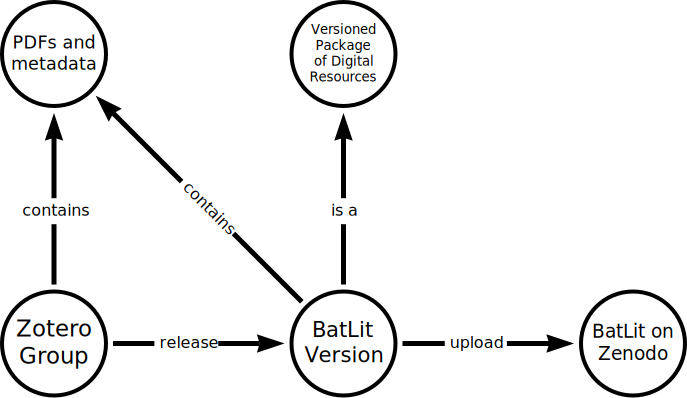

using versioned snapshots of the Zotero BatLit Library
Jorrit Poelen (UC Santa Barbara Cheadle Center, Ronin Institute, GloBI)
2025-08-26
We use Zotero to manage our literature corpus.
We use Preston to version our literature corpus 1.
We use Zenodo to allow versioned access to BatLit.
The BatLit Data Paper describes our BatLit workflow and provides specific examples.
Also, the paper relies on Zotero and Zenodo documentation to answer any questions about these platforms.
The following sections help you get started on Preston and their relation to Zotero and Zenodo.

Preston allows for creating a versioned snapshot of a Zotero library (or group).
Also, Preston allows for depositing this versioned snapshot into Zenodo.
At time of writing, 26 Aug 2025, this publish Zotero-to-Zenodo functionality only offered through Preston.
run
and verify that this produces something like:
0.11.0Copy and paste this into your commandline.
mkdir -p some/empty-directory
cd some/empty-directory
echo hi there! | preston track --algo md5 | grep hasVersion | preston cat which should produce…
hey there!echo hi there!Prints “hi there!” to standard output
echo hi there! | preston track --algo md5Print “hi there!” to output (stdout), then turn this output into
input (stdin) of preston track. So, this sends “hi there!”
to preston and versions (or tracks) the input. The output of preston is
a machine readable description of what happened and ends with something
like:
<...> <...hasVersion> <hash://md5/75c7e31591354f2c82226aa3eb0267c7> <...> .This preston output, or description, is formatted in rdf/nquads and records what content was recorded when and by who. This machine readable description is also known as the BOM Bill of Materials, manifest or packing slip for the tracked content.
echo hi there! | preston track --algo md5 | grep hasVersionThis prints only the part of the BOM that includes “hasVersion” and should look something like:
<urn:uuid:X> <...hasVersion> <hash://md5/75c7e31591354f2c82226aa3eb0267c7> .<urn:uuid:X> <...hasVersion> <hash://md5/75c7e31591354f2c82226aa3eb0267c7> ...This is a statement expressed in rdf/nquad. In this case, it
expressed something like: there’s this thing urn:uuid:X
that is associated with content that has a cryptographic hash
hash://md5/75c7e31591354f2c82226aa3eb0267c7. A
cryptographic hash is a unique fingerprint derived from the digital
content itself. If the content and the hash algorithm are the
same, the fingerprint is always the same. This concept is
central to internet security as well as things like
cryptocurrencies.
Now, we ask Preston to print the versioned content by piping the “hasVersion” statement into ``preston cat```:
echo hi there! | preston track --algo md5 | grep hasVersion | preston catto produce . . .
hi there!Now that we’ve versioned saying hi, we can print the content using
preston cat hash://md5/75c7e31591354f2c82226aa3eb0267c7to produce …
hi there!This suggests that Preston thinks that
hash://md5/75c7e31591354f2c82226aa3eb0267c7 is the
cryptographic hash of hi there!. And . . .
If you know the fingerprint of content (e.g.,
hash://md5/75c7e31591354f2c82226aa3eb0267c7), you can use
it to ask for what exactly what you want. And, on getting a
result, you can independently verify that this is the case
using some commonly available cryptographic hash calculators like
md5sum (linux) or md5 (Mac). These calculators
are readily available as they are central to internet security and other
core applications.
preston cat hash://md5/75c7e31591354f2c82226aa3eb0267c7 | md5sumproduces:
75c7e31591354f2c82226aa3eb0267c7 -Showing that an independent tool md5sum verified that
the content you asked for is the content you got!
After covering the Preston basics, we now explore how to create a versioned snapshot of a Zotero Literature Collection.
First, we create a Zotero Group for Testing, then we track the Zotero Test Group using Preston
In order to talk to Zotero using Preston (or any programmatic method) you need a Zotero Web API Key.
search Zotero documentation on getting an API Key
At time of writing, 2025-08-28, the following web pages
https://www.zotero.org/settings/keys
https://www.zotero.org/settings/security#applications
Get the API key and record it in a safe location. An API key is a
combation of letters and number e.g., 12345678
Preston has built in functionality to take a snapshot of a Zotero Collection.
cd ~)mkdir batlit-test)cd batlit-test)export ZOTERO_TOKEN=[SECRET]
preston track https://www.zotero.org/groups/6123963/test_auglist all the content of the metadata from the Zotero group across all Bill of Materials
preston ls\
| grep hasVersion\
| grep "https://api.zotero.org/groups/6123963/items/"\
| grep -v "file/view"\
| sort\
| preston catpreston track https://www.zotero.org/groups/6123963/test_augAfter making a change in a Zotero records, and creating a new snapshot, we can compare the different versions of Bill of Materials associated with these snapshots.
In order to do so, we need to (II.5.1) make a sorted list of all metadata for the most recent Bill of Materials and (II.5.2) make a sorted list of all metadata of a previous Bill of Materials. Finally, (II.5.3) we compare the differences between these metadata snapshots.
Create a sorted list metadata statement from the Zotero group for the most recent Bill of Materials, and list their content
preston head\
| preston cat\
| grep hasVersion\
| grep "https://api.zotero.org/groups/6123963/items/"\
| grep -v "file/view"\
| sort\
| preston cat\
> most-recent-metadata.txtwhere 6123963 is the group id number of your Zotero Test
Group.
List all the content of the metadata from the Zotero group for the oldest Bill of Materials and print it to a file
preston history\
| tail -1\
| preston cat\
| grep hasVersion\
| grep "https://api.zotero.org/groups/6123963/items/"\
| grep -v "file/view"\
| sort\
| preston cat\
> oldest-metadata.txtwhere 6123963 is the group id number of your Zotero Test
Group.
Now that we have the Zotero metadata for the most recent Bill of Materials, as well as a previous version, we can use diff to compare the differences.
diff most-recent-metadata.txt oldest-metadata.txtto produce
[...]
119c119
< "title": "Pteropus test",
---
> "title": "Seasonal roosts and foraging movements of the black flying fox (Pteropus alecto) in the Northern Territory: resource tracking in a landscape mosaic",
[...]In this example the title was changed to Pteropus test
and the diff reflects this.
Now that we can make a snapshot of a Zotera group, we’d like to take this snapshot and deposit it into Zenodo. In order to do so, we need to (III.1) create a test Zenodo community in their sandbox (III.2) create a Zenodo API key, and (III.3) upload a snapshot version into Zenodo sandbox using Preston.
Zenodo provides a sandbox to try their platform and experiment.
To deposit content into Zenodo programmatically (e.g., using Preston), you need a Zenodo Web API Key / Token.
preston head\
| preston cat\
| preston zotero-stream\
> zenodo.json export ZENODO_ENDPOINT=https://sandbox.zenodo.org
export ZENODO_TOKEN=[your secret token]mkdir logs
cat zenodo.json\
| preston track --data-dir logs/data\
| preston zenodo --data-dir logs/data --remote file://$PWD/data/\
> deposit.logElliott M.J., Poelen, J.H. & Fortes, J.A.B. (2023) Signing data citations enables data verification and citation persistence. Sci Data. https://doi.org/10.1038/s41597-023-02230-y hash://sha256/f849c870565f608899f183ca261365dce9c9f1c5441b1c779e0db49df9c2a19d↩︎
https://globalbioticinteractions.org/preston↩︎